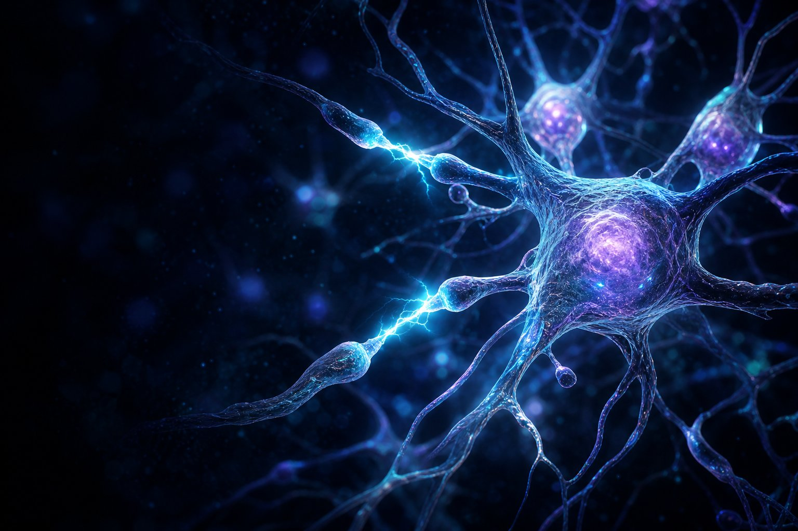
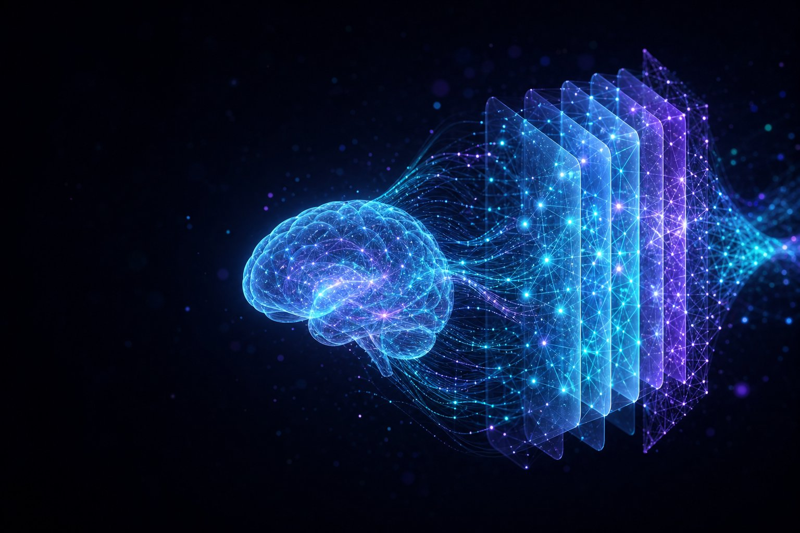
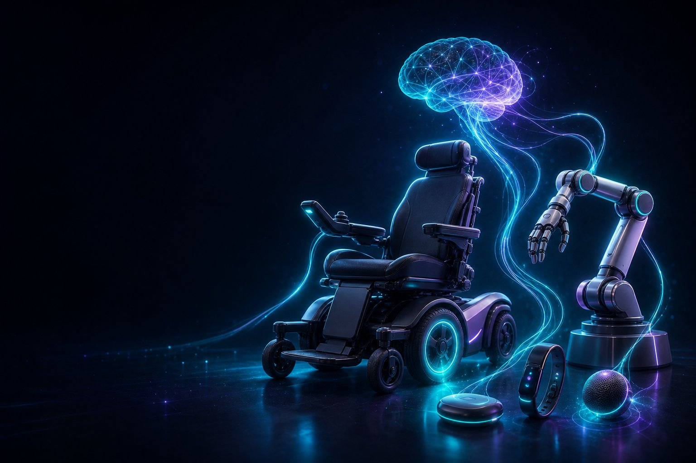
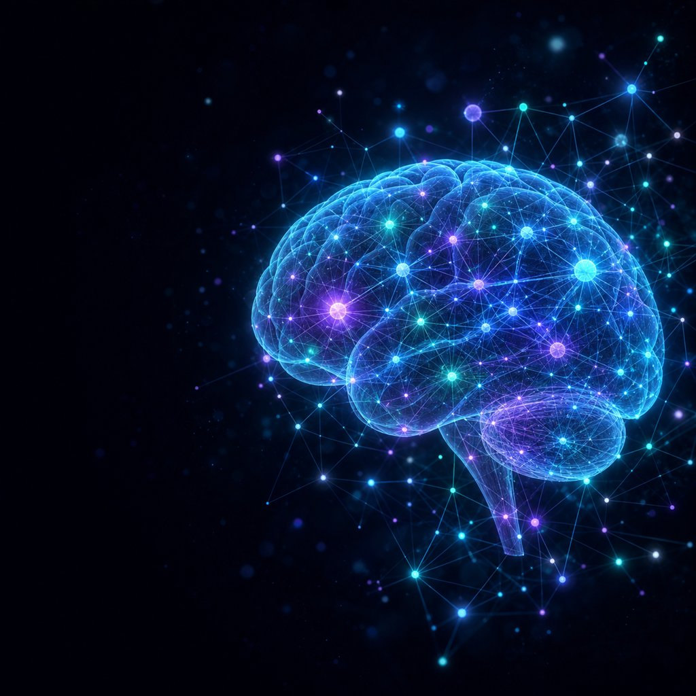

생각이 세상과
만나는 곳
뇌 및 인공지능 연구실은 생각을 세상과 잇는 뇌-컴퓨터 인터페이스를 연구합니다. 스크롤을 내려 뇌 속으로 들어가 보세요.
뇌 및 인공지능 연구실은 생각을 세상과 잇는 뇌-컴퓨터 인터페이스를 연구합니다. 스크롤을 내려 뇌 속으로 들어가 보세요.
무언가를 의도하는 순간, 뇌 속 수많은 뉴런이 미세한 전기 신호를 일으킵니다. BCI의 출발점입니다.
뇌를 층층이 열어, 신호가 어디서 어떻게 흐르는지 — 그 구조와 연결성을 밝혀냅니다.
밝혀낸 원리로 뇌와 기계를 연결합니다. 움직임 없이, 오직 생각으로.
뇌 및 인공지능 연구실(BRAIN Lab.)은 뇌-컴퓨터 인터페이스, 인공지능, 뇌 메커니즘을 통해 움직임이 어려운 사람도 생각만으로 세상과 연결되는, 사람을 향한 기술을 만듭니다.
우리 연구실은 하나님의 사랑을 실천하는 기독교 정신을 추구합니다. 하지만 크리스천이 아니어도 연구실에 들어올 수 있으며, 각 개인의 종교를 존중하고 다른 종교로 인한 피해는 없습니다. 사람들에게 도움이 되는 선한 기술을 연구하며, 희망하는 경우 도움의 손길이 필요한 곳을 위해 함께 기도하거나 재정적 후원을 합니다. 선한 연구를 함께 할 학생들은 편하게 연락 주세요.
뇌파를 측정·분석해 사용자의 의도를 인식하고, 이를 토대로 로봇이나 컴퓨터를 제어합니다. 움직임 없이 생각만으로 기기를 제어할 수 있어 장애인에게는 절대적으로 필요하고, 비장애인에게도 매우 유용한 기술입니다.
컴퓨터가 스스로 학습하고 결정하여 지능적으로 일을 처리하도록 만드는 기술로, 주로 기계학습을 다룹니다. BRAIN Lab.은 새로운 AI 알고리즘의 개발과 응용을 연구합니다.
AI가 뇌를 수학적으로 모델링하며 발전해온 것처럼, 뇌 연구는 의학·신경과학뿐 아니라 공학·경제학·심리학의 근간이 됩니다. 다양한 뇌 연구를 통해 뇌가 동작하는 메커니즘을 규명합니다.
뇌의 전기 신호에서 시작해 측정하고 해독하여, 세상을 제어하기까지 — BCI의 네 단계.



공개된 뉴런 재구성 데이터(사람 대뇌피질 추체세포)를 그대로 불러와 3D로 렌더링했습니다. 스크롤하면 뉴런이 회전하고, 세포체(soma)에서 수상돌기를 따라 전기 신호가 흘러갑니다.
데이터: 사람 대뇌피질 추체세포(pyramidal cell)의 3D 재구성(SWC) · 공개 뉴런 형태 데이터 활용
뇌 신호에서 의미를 읽어내기 위해 원천 신호 추출 · 대역 필터링 · 기능적 연결성 · 중심성 · 군집화 · 시각화로 이어지는 분석 흐름을 설계합니다.

연구실의 대표 방법론은 뇌 영역 사이의 상호작용을 정량화하는 기능적 연결성(functional connectivity)과, 네트워크에서 각 영역의 영향력을 측정하는 중심성(centrality) 분석입니다. 여기에 딥러닝을 결합해 뇌 신호를 자동으로 해독하고 의도를 예측합니다.
대표 논문 최고 IF 9.8 (Scientific Data) · Scientific Reports “Top 100 in Neuroscience” 선정 · Electronics 표지 논문
대통령 직속 국가인공지능전략위원회 자문위원
영국 버밍엄대학교 방문교수(Visiting Professor)
2020년 논문이 신경과학 분야 Top 100에 선정
2018·2022·2023 등 다수 수상
광주광역시 동구 필문대로 309
조선대학교 IT융합대학 9120호
염홍기 (Hong Gi Yeom) · 조선대학교 부교수